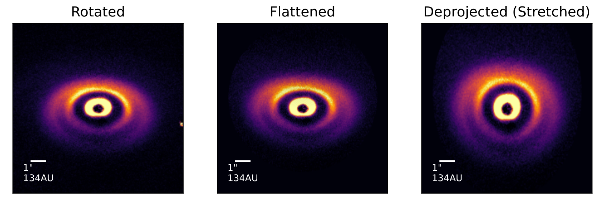

Code Snippets
Here are some pieces of python code I've written over the course of my work that I've found particularly useful. If they seem handy to you, feel free to copy and paste them into your chosen python environment! In cases where I particularly want credit I'll put in the relevant citation :)
Disk Deprojection
This function's purpose is to convert an image of an inclined circumstellar disk to a pseudo-top-down view of its surface. This deprojection is based on the assumption that a disk follows a power-law vertical height profile. This is not a totally original idea, and the concept has been used across the literature. As they say, however, there are many like it but this one is mine. If you want to use this code snippet in your work, please consider citing this paper :)

from astropy.io import fits
from astropy.nddata import Cutout2D
from scipy import ndimage
import matplotlib.pyplot as plt
import numpy as np
import math
from tqdm import tqdm
from matplotlib_scalebar.scalebar import ScaleBar
from mpl_toolkits.axes_grid1.anchored_artists import AnchoredSizeBar
import matplotlib.font_manager as fm
def rebin(arr, new_shape):
shape = (new_shape[0], arr.shape[0] // new_shape[0],
new_shape[1], arr.shape[1] // new_shape[1])
return arr.reshape(shape).mean(-1).mean(1)
def deprojection(inputarray,h0,r0,alpha,inc,PA,dist,extent,resolution,rebinyes=True,vmin=0,vmax=None):
'''
Deprojects disk image to give pseudo-top-down image of the disk, based on disk height profile h(r) = h0(R/r0)^alpha
Arguments:
-inputarray: numpy array of fits image data
-h0: height of scattering surface at r0
-r0: distance for aspect ratio
-alpha: flaring power
-inc: disk inclination, ie angle about major axis that disk is rotated
-PA: position angle, ie angle of major axis to horizontal
-dist: System distance in AU
-extent: width of the zone in the image in which to perform deprojection. This protects against the code breaking
because it tries to shift a pixel value up to a co-ordinate outside of the image space
Everything outside this range just has a constant brightness value
-resolution: pixel scale in terms of degrees, for SPHERE images enter 3.40305e-6
-rebinyes: in the process of deprojecting the image is interpolated to make it 10 times bigger. This flag just
determines whether the image is rebinned down to its original size or not. I don't remember why I had this, probably best to leave alone
-vmin, vmax: matplotlib parameters for how the images are displayed when the function outputs the plots, can be left alone
Returns:
-numpy array of final deprojected image
'''
#Gets pixel scale of image in AU from distance and pixel angular resolution
pix = np.tan((resolution/10)*np.pi/180)*dist
print('AU/Pixel = ',pix)
#rotarray is rotated image so major axis lies along horizontal
rotarray = ndimage.rotate(inputarray,PA)
#interparray is the rotated image interpolated so that it is 10 times bigger
interparray = ndimage.zoom(rotarray,(10,10))
#finds centre of interpolated image
centrepoint = (len(interparray[0])/2,len(interparray)/2)
#preparing array into which final pixel values will be dumped
outarray = np.ones(interparray.shape)*0.0000001
#setting up radial position and x,y position arrays
R = []
xy = []
#nested loop for iterating over every image pixel
for y in tqdm(range(len(interparray))):
for x in range(len(interparray[0])):
#for each point, finds r in pixels, then converts to AU
xy.append((x-centrepoint[0],y-centrepoint[1]))
rpix = np.sqrt(np.abs(x-centrepoint[0])**2 + np.abs(y-centrepoint[1])**2)
r = rpix * pix
R.append(r)
#within extent defined in args, defines offset based on height profile equation for variable r
#pixel value at the point being read is written to the new array in its offset location
if r < extent:
u = h0*(r/r0)**alpha * np.sin(inc*np.pi/180)
ux = x
uy = y + round(u/pix)
outarray[uy][ux]=interparray[y][x]
if rebinyes:
#bins array back down to original scale and makes final array which is cut down to same scale as input images
rebinarray = rebin(outarray, inputarray.shape)
finalarray = ndimage.zoom(rebinarray,(1/np.cos(inc*np.pi/180),1))
finalarray = np.array(Cutout2D(finalarray,(len(finalarray[0])/2,len(finalarray)/2),(len(inputarray[0]),len(inputarray))).data)
else:
finalarray = ndimage.zoom(outarray,(1/np.cos(inc*np.pi/180),1))
finalarray = np.array(Cutout2D(finalarray,(len(finalarray[0])/2,len(finalarray)/2),(inputarray.shape[0],inputarray.shape[1])).data)
#everything below here is just plotting
fig, ax = plt.subplots(1,3,figsize=(9,3))
for plot in range(len(ax)):
ax[plot].tick_params(
axis='both', # changes apply to both axes
which='both', # both major and minor ticks are affected
bottom=False, # ticks along the bottom edge are off
top=False,
left=False,
right=False,
labelbottom=False,
labelleft=False)
fontprops = fm.FontProperties(size=8)
ax[0].imshow(rotarray,vmin=vmin,vmax=vmax,origin='lower',cmap='inferno',extent=[-rotarray.shape[0]/2*4.53298,
rotarray.shape[0]/2*4.53298,
-rotarray.shape[1]/2*4.53298,
rotarray.shape[1]/2*4.53298])
ax[0].set_title('Rotated')
scalebar = AnchoredSizeBar(ax[0].transData,
134, '1"\n134AU', 'lower left',
pad=1,
color='white',
frameon=False,
size_vertical=6,
fontproperties=fontprops
)
ax[0].add_artist(scalebar)
ax[1].imshow(outarray,vmin=vmin,vmax=vmax,origin='lower',cmap='inferno',extent=[-outarray.shape[0]/2*0.453298,
outarray.shape[0]/2*0.453298,
-outarray.shape[1]/2*0.453298,
outarray.shape[1]/2*0.453298])
ax[1].set_title('Flattened')
scalebar = AnchoredSizeBar(ax[1].transData,
134, '1"\n134AU', 'lower left',
pad=1,
color='white',
frameon=False,
size_vertical=6,
fontproperties=fontprops
)
ax[1].add_artist(scalebar)
ax[2].imshow(finalarray,vmin=vmin,vmax=vmax,origin='lower',cmap='inferno',extent=[-finalarray.shape[0]/2*4.53298,
finalarray.shape[0]/2*4.53298,
-finalarray.shape[1]/2*4.53298,
finalarray.shape[1]/2*4.53298])
ax[2].set_title('Deprojected (Stretched)')
scalebar = AnchoredSizeBar(ax[2].transData,
134, '1"\n134AU', 'lower left',
pad=1,
color='white',
frameon=False,
size_vertical=6,
fontproperties=fontprops
)
ax[2].add_artist(scalebar)
return finalarray
Converting IUE Spectra Into Specutils Spectrum Objects
A lot of the utilities for reading IUE spectra are incredibly archaic at this point, there was an IRAF utility that did the reduction nicely but it is very difficult to install on a modern system. Here is my workaround, which reads the spectra in their ASCII format which the IUE archive page uses to display previews of the spectra. You can just dump all your downloaded ASCII files into a folder, point the function at that folder and it will return an array with all of the spectra within. It will even sort them by observing epoch! This helps speed up the acquisition of UV spectra for choice stars - especially useful if you want to track periodic changes in the UV regime over the course of IUE's observing lifetime (RIP to a real one).
from tqdm import tqdm
from specutils import Spectrum, SpectralRegion
import astropy.units as u
def iuereader(path):
'''
Makes specutils spectra out of ASCII file versions of IUE spectra
Takes as input a string which is the path to the directory containing the ASCII files
Returns list as follows: [(specutils.Spectrum, string, string),(...),...]
1st string is note of whether spectrum is high- or low-dispersion
2nd string is observing time
Make sure this directory only contains the ASCII files and nothing else
Acquire data here:
https://archive.stsci.edu/iue/search.php
Click 'Download ASCII table of large aperture fluxes & wavelengths.', example below:
https://archive.stsci.edu/cgi-bin/mastpreview?mission=iue&dataid=LWP19353
'''
asciifiles = os.listdir(path)
spectra = []
for i in tqdm(range(len(asciifiles)),'Reading spectra: '):
file = open(path+asciifiles[i]).readlines()
flux = []
wavelength = []
obstime = file[9]+file[10]
if file[1][-10:-6] == 'HIGH':
eqn = file[18]
if eqn[8:10] == '.1':
eqn = eqn[:10] + ' ' + eqn[10:]
else:
eqn = eqn[:19] + '.0' + eqn[19:]
a = eval(eqn[7:11])
b = eval(eqn[15:21])
c = eval(eqn[30:])
for i in range(len(file[19:])):
if eval(file[i+19][:11]) != -1.0:
flux.append(eval(file[i+19][:11]))
else:
flux.append(np.nan)
wavelength.append(a*i + b)
wavelength = np.array(wavelength) * u.AA
flux = np.array(flux) * u.erg * u.cm**(-2) * u.s**(-1) * u.AA**(-1)
spectra.append([Spectrum(spectral_axis=wavelength, flux=flux),'high',obstime])
else:
for i in range(len(file[18:])):
wavelength.append(eval(file[i+18][:7]))
flux.append(eval(file[i+18][9:17]))
wavelength = np.array(wavelength) * u.AA
flux = np.array(flux) * u.erg * u.cm**(-2) * u.s**(-1) * u.AA**(-1)
spectra.append([Spectrum(spectral_axis=wavelength, flux=flux),'low',obstime])
#Bubble sort
for i in tqdm(range(len(spectra)),'Sorting by year: '):
already_sorted = True
for j in range(len(spectra) - i - 1):
if eval(spectra[j][2][6:8]) > eval(spectra[j+1][2][6:8]):
spectra[j], spectra[j + 1] = spectra[j + 1], spectra[j]
already_sorted = False
if already_sorted:
break
print('Sorted!')
return spectra
spectra = iuereader('fits/FS-CMa-IUE/ascii/')